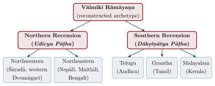
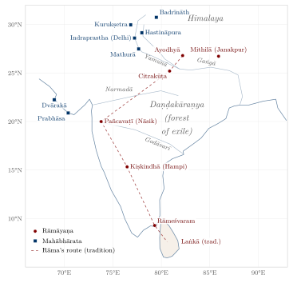

Chapter 2: The Vālmīki Rāmāyaṇa: The Ādikāvya¶
Few works of world literature have had the cultural reach of the Rāmāyaṇa attributed to Vālmīki, the ādikavi or “first poet.” Composed in the anuṣṭubh śloka that became the standard measure of later Sanskrit narrative verse, it tells the story of Rāma — for the tradition the ideal man, the ideal king and the embodiment of dharma — and has been retold, performed, worshipped and argued over across South and Southeast Asia for more than two millennia (Brockington 1998; Goldman 1984–2017).
The tradition calls the Rāmāyaṇa the ādikāvya, the first poem. According to the opening cantos of the text itself, the śloka form was born from Vālmīki’s cry of anguish on witnessing the killing of a bird: grief (śoka) became verse (śloka). The metre itself is older — the anuṣṭubh occurs throughout the Veda — but the story makes Vālmīki the founder of secular poetry (kāvya), and later poeticians accepted that role for him.
2.1 Vālmīki: The Ādi Kavi¶
2.1.1 The Life and Transformation of Vālmīki¶
The epic itself says little about its author. In the Uttarakāṇḍa Vālmīki appears as a sage who shelters the banished Sītā in his hermitage, raises her twin sons Kuśa and Lava, and teaches them to sing the poem; there he calls himself a son of Pracetas (hence the patronymic Prācetasa). The famous story that he had been a robber named Ratnākara, who was reformed by the seven sages and meditated so long that an ant-hill (valmīka) grew over him, is not found in the critical text. It belongs to later tradition — it is told, for instance, in the Adhyātma Rāmāyaṇa, in Purāṇic māhātmyas and in regional Rāmāyaṇas — and the name is derived from valmīka by folk etymology.
The tradition knows him by several titles: ādikavi, the first poet and author of the first kāvya; Prācetasa, the son of Pracetas; and, in later devotional sources, a brahmarṣi who reached that rank through his austerities.
2.1.2 The Birth of the Śloka: Grief into Poetry¶
The second sarga of the Bālakāṇḍa tells how poetry itself began. Vālmīki, walking by the river Tamasā with his disciple Bharadvāja, saw a pair of krauñca birds (usually identified as cranes or curlews) mating, when a hunter’s arrow killed the male. Moved by the cry of the female, Vālmīki cursed the hunter:
Rāmāyaṇa 1.2.14 (Critical Edition)
mā niṣāda pratiṣṭhāṃ tvam agamaḥ śāśvatīḥ samāḥ /
yat krauñcamithunād ekam avadhīḥ kāmamohitam //
Translation:
“Hunter (niṣāda), may you find no rest for endless years,
since you killed one of this pair of krauñcas
while it was lost in love.”
Vālmīki was astonished at what he had uttered, a verse with four equal quarters fit to be sung to the lute:
Rāmāyaṇa 1.2.17 (Critical Edition)
pādabaddho ’kṣarasamas tantrīlayasamanvitaḥ /
śokārtasya pravṛtto me śloko bhavatu nānyathā //
Translation:
“Bound in metrical feet, with an equal number of syllables, fit for the rhythm of the lute —
this utterance that came from me in my grief shall be called a śloka, and nothing else.”
The god Brahmā then appears, tells Vālmīki that this speech came forth by his will, and commissions him to compose the whole story of Rāma in the same form. Many centuries later the critic Ānandavardhana made the episode the emblem of his theory of poetry: “the very soul of poetry is that (suggested) meaning, as, long ago, the grief of the first poet, arising from the separation of the pair of krauñcas, became verse (śokaḥ ślokatvam āgataḥ)” (Dhvanyāloka 1.5).
2.2 Structure: Seven Kāṇḍas¶
The Rāmāyaṇa describes itself (Bālakāṇḍa, sarga 4 of the vulgate) as a poem of 24,000 ślokas in 500 sargas, arranged in six books “and the Uttara” — a formulation that itself hints that the seventh book was felt to be an addition. The printed vulgate texts come close to the traditional figure; the Baroda Critical Edition is shorter. A later tradition, the “Gāyatrī Rāmāyaṇa,” holds that each thousand ślokas begins with one of the twenty-four syllables of the Gāyatrī mantra; this is a devotional reading, not a feature of the text as transmitted (Table 2.1).
| Kāṇḍa | Name | Sargas (vulgate) |
Sargas (CE) |
Primary Content |
|---|---|---|---|---|
| 1 | Bāla Kāṇḍa | 77 | 76 | Birth of Rāma; breaking of Śiva’s bow; marriage |
| 2 | Ayodhyā Kāṇḍa | 119 | 111 | Exile; death of Daśaratha; Bharata’s refusal |
| 3 | Araṇya Kāṇḍa | 75 | 71 | Forest life; Śūrpaṇakhā; abduction of Sītā |
| 4 | Kiṣkindhā Kāṇḍa | 67 | 66 | Alliance with Sugrīva; killing of Vālin; search |
| 5 | Sundara Kāṇḍa | 68 | 66 | Hanumān in Laṅkā |
| 6 | Yuddha Kāṇḍa | 128 | 116 | War; death of Rāvaṇa; Sītā’s ordeal; coronation |
| 7 | Uttara Kāṇḍa | 111 | 100 | Origins of Rāvaṇa; banishment of Sītā; Śambūka; end of Rāma’s reign |
| Total | 645 | 606 |
Scholarly Note: The growth of the text
Since Hermann Jacobi’s study of 1893, most scholars have regarded Books 2–6 as the oldest part of the poem, and Books 1 and 7 as later additions: they differ in style, they contain most of the passages that present Rāma as an incarnation of Viṣṇu, and the table of contents at the opening of Book 1 originally appears to have ended with the return to Ayodhyā. Brockington distinguishes several stages of growth extending over many centuries; Goldman dates the earliest stratum c. 750–500 BCE, while others prefer the 5th–3rd centuries BCE (see Table 1.5) (Jacobi 1893; Brockington 1984; Goldman 1984–2017).
2.3 The Recensions: Northern and Southern Traditions¶
The manuscripts of the Rāmāyaṇa fall into distinct regional recensions. The editors of the Critical Edition prepared at the Oriental Institute, Baroda (1960–1975) grouped the manuscripts into two major families, each with sub-recensions defined largely by script (Figure 2.1; Table 2.2):

2.3.1 Key Differences Between Recensions¶
| Feature | Northern Recension | Southern Recension |
|---|---|---|
| Sub-recensions | Northwestern and Northeastern, which differ considerably from each other | Telugu, Grantha and Malayalam, which are relatively uniform |
| Relation between recensions | Large parts of the text are shared, but each recension contains many verses (and some whole passages) absent from the other, and wording differs widely | |
| Basis of the Critical Edition | Used for comparison; northern-only passages relegated to the apparatus and appendices | Chosen as the basis of the constituted text because of its greater homogeneity |
| Commentaries | Fewer surviving commentaries | The major commentaries (Govindarāja, Maheśvaratīrtha, the Tilaka) follow southern texts |
2.3.2 The Baroda Critical Edition (1960–1975)¶
The Oriental Institute of the Maharaja Sayajirao University of Baroda produced the Critical Edition of the Vālmīki Rāmāyaṇa in seven volumes between 1960 and 1975, under the general editorship of G. H. Bhatt and U. P. Shah (Bhatt and Shah 1960–1975). Unlike the Poona edition of the Mahābhārata, which gives preference to the northern recension, the Baroda editors judged the southern recension to be more homogeneous and generally closer to the archetype and therefore used it as their base, recording the rest in the critical apparatus. The resulting text is the basis of the complete English translation by Robert Goldman and his collaborators (Goldman 1984–2017). Critics have pointed out that the constituted text is a scholarly reconstruction that never circulated as such, and that the excluded passages are themselves part of the Rāmāyaṇa’s history; but the edition remains the indispensable basis for historical study of the poem.
2.4 Literary Character of the Rāmāyaṇa¶
2.4.1 The Rasa Aesthetic¶
Sanskrit critics after Ānandavardhana took pathos (karuṇa) to be the dominant rasa of the poem, with the heroic (vīra) subordinate (Section 1.7). The grief that gave birth to the first śloka returns in Daśaratha’s death, Kausalyā’s lament and, above all, the separation (viraha) of Rāma and Sītā.
2.4.2 The Anuṣṭubh Metre: The Heartbeat of Sanskrit Poetry¶
The anuṣṭubh śloka consists of four pādas (quarter-verses) of eight syllables each, thirty-two syllables in all. The overwhelming majority of the Rāmāyaṇa is composed in this metre. Longer metres of the triṣṭubh family (indravajrā, upajāti) and others such as vaṃśastha occur mainly in the closing verses of sargas, a convention later standard in courtly mahākāvya.
2.5 Significance of the Rāmāyaṇa¶
2.5.1 Rāma as the Ideal: Vālmīki’s Frame¶
The opening sarga of the Bālakāṇḍa frames the whole poem as the answer to a question. Vālmīki asks the divine sage Nārada whether there is anyone in the world who possesses every virtue:
Rāmāyaṇa 1.1.2: Vālmīki’s Question
ko nv asmin sāmprataṃ loke guṇavān kaś ca vīryavān /
dharmajñaś ca kṛtajñaś ca satyavākyo dṛḍhavrataḥ //
Translation:
“Who in this world today is virtuous and who is valiant,
who knows dharma, who is grateful,
truthful in speech and firm in his vows?”
Vālmīki’s question continues for two more verses (1.1.3–4), listing some sixteen qualities in all: besides virtue, valour, knowledge of dharma, gratitude, truthful speech and firm vows, the ideal man is of good conduct, benevolent to all beings, learned, capable, pleasing to behold, self-possessed, free of anger and envy, radiant, and one whom even the gods fear when he is roused in battle. Nārada answers that such a man exists — Rāma of the Ikṣvāku line — and summarises his story. The poem thus presents itself from its first verses as the portrait of an ideal; the later Hindi epithet Maryādā Puruṣottama, “the supreme person who keeps within the bounds,” expresses the same ideal.
2.5.2 Recitation as a Meritorious Act¶
The Rāmāyaṇa tradition holds the text to be puṇya (meritorious) to recite and to hear. The Yuddhakāṇḍa of the vulgate closes with a phalaśruti that promises long life, prosperity, sons and freedom from sin to those who listen to the poem, a promise repeated and amplified in later devotional Rāmāyaṇas.
2.6 Relationship with Vālmīki’s Other Works¶
The Yoga Vāsiṣṭha (also called the Vāsiṣṭha Mahārāmāyaṇa), a long philosophical work cast as a dialogue between the sage Vasiṣṭha and the young Rāma, is attributed by tradition to Vālmīki. Modern scholarship regards it as a much later work: its earliest recoverable form, the Mokṣopāya, was composed in Kashmir around the tenth century, and the text was later reworked in an Advaitic direction. The traditional attribution shows how the authority of Vālmīki’s name could be used to frame new philosophical teaching.
2.7 The Rāmāyaṇa Tradition: Versions and Adaptations¶
The Rāmāyaṇa was retold in virtually every language and cultural region of South and Southeast Asia, and in Jain and Buddhist as well as Hindu forms. Table 2.3 presents a selection:
| Title | Author | Language | Notable Feature |
|---|---|---|---|
| Vālmīki Rāmāyaṇa | attributed to Vālmīki | Sanskrit | Earliest full surviving version; model for most later Hindu versions |
| Rāmopākhyāna | (Mahābhārata 3.257–275) | Sanskrit | Condensed telling within the Mahābhārata |
| Dasaratha Jātaka | Buddhist canon (Jātaka 461) | Pāli | Rāma as a previous birth of the Buddha; no abduction |
| Paumacariya | Vimalasūri | Prakrit | Earliest Jain version; Rāvaṇa a Vidyādhara, not a demon |
| Padmacarita | Raviṣeṇa (late 7th c.) | Sanskrit (Jain) | Sanskrit reworking of the Jain story |
| Irāmāvatāram | Kampaṉ (c. 12th c.) | Tamil | Independent literary masterpiece |
| Rāmacaritamānas | Tulsīdās (begun 1574) | Awadhi | Most influential North Indian version |
| Saptakāṇḍa Rāmāyaṇa | Mādhava Kandalī (14th c.) | Assamese | One of the earliest vernacular versions; Kandalī’s five books were completed by Mādhavadeva and Śaṅkaradeva |
| Kṛttivāsī Rāmāyaṇ | Kṛttivās (15th c.) | Bengali | Devotional; the classic Bengali version |
| Candrāvatī Rāmāyaṇ | Candrāvatī (16th c.) | Bengali | By a woman poet; centred on Sītā |
| Adhyātma Rāmāyaṇam Kilippāṭṭu | Eḻuttacchaṉ (16th c.) | Malayalam | Based on the Sanskrit Adhyātma Rāmāyaṇa |
| Torave Rāmāyaṇa | Narahari (Kumāravālmīki) (c. 16th c.) | Kannada | Popular devotional version |
| Raṅganātha Rāmāyaṇamu | Goṇa Budda Rāḍḍi (13th–14th c.) | Telugu | Influential in Andhra |
| Jagamohana Rāmāyaṇa | Balarāma Dāsa (16th c.) | Odia | Classic Odia version |
| Bhāvārtha Rāmāyaṇ | Eknāth (16th c.) | Marathi | Devotional retelling by the Vārkarī poet |
| Kakawin Rāmāyaṇa | attributed to Yogīśvara (9th c.) | Old Javanese | Southeast Asian courtly adaptation |
| Bhānubhakta Rāmāyaṇa | Bhānubhakta Ācārya (19th c.) | Nepali | The first great work of Nepali literature |
| Hikayat Seri Rama | Unknown | Malay | Version shaped by an Islamic milieu |
A. K. Ramanujan’s essay “Three Hundred Rāmāyaṇas” (first presented in 1987, published 1991) took its title from the count of versions made by earlier scholarship and argued that the Rāma story is best seen not as one text with derivatives but as a “pool of signifiers” from which each telling draws (Ramanujan 1991). The essay’s inclusion in the history syllabus of the University of Delhi was challenged by protesters, and the university’s Academic Council removed it in 2011 — an episode that itself illustrates how contested the plurality of Rāmāyaṇas remains.
2.8 Jain, Buddhist and Questioning Rāmāyaṇas¶
Vālmīki’s poem is the earliest complete version to survive, but it was never the only one. Camille Bulcke’s monumental Hindi study Rāmkathā (1950) first surveyed the whole field, and Paula Richman’s edited volumes Many Rāmāyaṇas (1991) and Questioning Rāmāyaṇas (2001) brought it into the centre of modern scholarship (Bulcke 1950; Richman 1991, 2001).
2.8.1 The Buddhist Dasaratha Jātaka¶
The Pāli Dasaratha Jātaka (no. 461 in the Jātaka collection) tells a very different story (Cowell 1895–1907). King Dasaratha of Vārāṇasī sends his children Rāma-paṇḍita, Lakkhaṇa and Sītā to the Himalaya to protect them from a scheming queen; when news of the king’s death reaches them, Rāma alone remains calm, explaining to his grieving siblings that all that lives must die. He returns after the agreed period, reigns for sixteen thousand years, and takes Sītā — in this version his sister — as his queen. There is no abduction, no Rāvaṇa and no war. The Buddha tells the story to console a landowner mourning his father, and identifies himself as Rāma in a former life. Scholars disagree about the relation of the Jātaka to Vālmīki: some have seen in it an older form of the story, but Richard Gombrich and others have argued that it presupposes knowledge of the Sanskrit epic and recasts it to teach equanimity (Gombrich 1985).
2.8.2 Jain Rāmāyaṇas¶
The Jains developed their own Rāma tradition, beginning with Vimalasūri’s Prakrit Paumacariya (“The Deeds of Padma”); its colophon places it in the first century CE, though many scholars date it several centuries later. It was followed by Raviṣeṇa’s Sanskrit Padmacarita (late 7th century), Svayambhū’s Apabhraṃśa Paumacariu (9th century), Nāgacandra’s Kannada Rāmacandracaritapurāṇa (c. 1100) and Hemacandra’s account in the Triṣaṣṭiśalākāpuruṣacarita (12th century). In these works Rāma (Padma) is the eighth Baladeva, Lakṣmaṇa the corresponding Vāsudeva and Rāvaṇa the Prativāsudeva of the Jain universal history. The Rākṣasas and Vānaras are not demons and monkeys but clans of vidyādharas, human beings with magical knowledge, named after their banners; Rāvaṇa is a learned and pious king undone by desire. Vimalasūri explicitly rejects as absurd the “false” stories of other poets — of monkeys who build bridges and of Kumbhakarṇa sleeping for six months. Consistently with Jain ethics, it is Lakṣmaṇa, not Rāma, who kills Rāvaṇa and who goes to hell for it, while Rāma renounces the world, becomes a Jain monk and attains liberation. The Jain versions thus offer a rationalised and non-violent counter-tradition that was itself widely read (Kulkarni 1990).
2.8.3 Oppositional and Marginal Voices¶
Within Hindu South Asia, too, the epic has been retold from the margins. Women’s songs in Telugu, Bengali, Maithili and other languages dwell on Sītā’s pregnancy, her banishment and the sufferings of women in Rāma’s household, often implicitly criticising Rāma (Narayana Rao 1991). The sixteenth-century Bengali poet Candrāvatī composed a Rāmāyaṇa that tells the story largely from Sītā’s point of view. In the twentieth century, E. V. Ramasamy (Periyar) and the Dravidian movement in Tamil Nadu read the Rāmāyaṇa as a story of Aryan conquest of the Dravidian south, inverted its moral polarities and staged public burnings of Rāma’s image; B. R. Ambedkar, in Riddles in Hinduism, criticised Rāma’s treatment of Sītā and of the Śūdra ascetic Śambūka (Richman 2001; Ambedkar 1987). Feminist and Dalit critiques of the epic, and the continuing debate over Sītā’s ordeal and banishment, are discussed in Chapters 3 and 10.
2.9 The Rāmāyaṇa in Daily Religious Life¶
2.9.1 Pārāyaṇa: The Nine-Day Recitation¶
The complete recitation of the Rāmāyaṇa (pārāyaṇa) is traditionally completed over nine days (navadina pārāyaṇa) or other fixed periods. It is especially associated with:
-
Rāmanavamī (Rāma’s birthday) and the spring Navarātri that precedes it
-
The autumn festival season culminating in Dasarā (Vijayadaśamī)
-
Household ceremonies and vows (vrata)
The story is also enacted. The Rāmlīlā of North India re-enacts it every autumn, culminating at Dasarā; the month-long Rāmlīlā of Ramnagar near Varanasi, under the patronage of the Mahārājā of Benares, is the best known (Section 12.5). UNESCO proclaimed Rāmlīlā a Masterpiece of the Oral and Intangible Heritage of Humanity in 2005, and it was inscribed on the Representative List of the Intangible Cultural Heritage of Humanity in 2008 (Lutgendorf 1991).
2.10 Scholarly Perspectives on the Rāmāyaṇa¶
2.10.1 Modern Studies¶
European scholarship on the Rāmāyaṇa began with partial translations by William Carey and Joshua Marshman (1806–1810) and the verse translation of Ralph T. H. Griffith (1870–1874). Major contributions since then include:
-
Hermann Jacobi, Das Rāmāyaṇa (1893) — the first systematic analysis of the epic’s growth (Jacobi 1893)
-
Camille Bulcke, Rāmkathā (1950) — a survey of the Rāma story in all its versions (Bulcke 1950)
-
G. H. Bhatt, U. P. Shah and colleagues, the Baroda Critical Edition (1960–1975) (Bhatt and Shah 1960–1975)
-
J. L. Brockington, Righteous Rāma (1984) — analysis of the epic’s evolution (Brockington 1984)
-
Robert P. Goldman and collaborators, The Rāmāyaṇa of Vālmīki (Princeton, 7 vols., 1984–2017) — the annotated translation of the Critical Edition (Goldman 1984–2017)
-
Sheldon Pollock — studies of Rāma’s divinity and of the epic’s political uses (Pollock 1993)
-
Paula Richman (ed.), Many Rāmāyaṇas (1991) and Questioning Rāmāyaṇas (2001) (Richman 1991, 2001)
2.10.2 Traditional Sanskrit Commentaries¶
The Rāmāyaṇa attracted a substantial commentarial tradition, mostly from the sixteenth century onwards and mostly in the south:
-
Govindarāja, Bhūṣaṇa (16th century) — an extensive Śrīvaiṣṇava commentary
-
Maheśvaratīrtha, Tattvadīpikā — an Advaitic commentary
-
The Tilaka, attributed to Nāgeśa Bhaṭṭa or his patron Rāma (18th century) — widely printed with the vulgate
-
Tryambaka Makhin, Dharmākūta (18th century, Thanjavur) — reads the epic as a source of dharma
2.11 The Rāmāyaṇa’s Geography: Sacred Landscape¶
The Rāmāyaṇa maps a geography that spans much of the subcontinent, from Ayodhyā in the Gangetic plain through the forests of central India to the southern sea. The detail is most precise for the north and becomes vaguer further south, which many scholars take as a sign of the poem’s northern origin. Later tradition turned this landscape into a sacred geography, identifying sites across India with the stages of Rāma’s journey (Table 2.4).
| Rāmāyaṇa Name | Kāṇḍa | Modern Location | Significance |
|---|---|---|---|
| Ayodhyā | Bāla, Ayodhyā | Ayodhya, U.P. | Rāma’s birthplace; capital of Kośala |
| Citrakūṭa | Ayodhyā | Chitrakoot, M.P. | Bharata visits Rāma; Pādukā episode |
| Daṇḍakāraṇya | Araṇya | Central-South India | Forest of exile; sages’ hermitages |
| Pañcavaṭī | Araṇya | Nāsik, Maharashtra | Sītā’s abduction occurs here |
| Kiṣkindhā | Kiṣkindhā | Hampi, Karnataka (traditional) | Vānara capital; Sugrīva’s kingdom |
| Ṛṣyamūka Parvata | Kiṣkindhā | Hampi hills (traditional) | Rāma meets Hanumān |
| Rāmeśvaram | Yuddha (later tradition) | Rāmeśvaram, T.N. | Worship of the Śiva liṅga before the crossing (not in Vālmīki; later tradition) |
| Setu (Bridge) | Yuddha | Adam’s Bridge (traditional) | Nala’s bridge to Laṅkā |
| Laṅkā | Sundara, Yuddha | Sri Lanka (traditional; disputed) | Rāvaṇa’s fortress city |
2.11.1 The Concept of Rāma’s Footsteps (Rāma-Padāṅka)¶
The later Rāma tradition holds that places where Rāma set foot became sacred. The belief gave rise to a large network of pilgrimage sites (tīrthas) stretching from Ayodhyā in the north to Rāmeśvaram in the south, many of them first attested in Purāṇic māhātmyas and regional Rāmāyaṇas rather than in Vālmīki. Figure 2.2 maps these sites together with the principal places of the Mahābhārata (Section 12.10).

2.12 Character Studies: The Major Figures of the Rāmāyaṇa¶
The tradition reads the figures around Rāma as embodiments of particular virtues or vices; Vālmīki’s text, and its later retellings, give several of them more room than that reading allows. The women of the poem are discussed in Chapter 10.
2.12.1 Hanumān¶
In the later tradition Hanumān is the model of dāsya bhakti, devotion expressed as service. Son of the wind god Vāyu, he combines immense strength with learning and courage, and devotes all of them to Rāma. The Sundarakāṇḍa is essentially Hanumān’s book. Already on their first meeting in the Kiṣkindhākāṇḍa, Rāma remarks on the correctness and eloquence of Hanumān’s speech, observing that he must have studied grammar thoroughly. Hanumān’s importance grew steadily in later centuries, until he became one of the most widely worshipped deities of India in his own right (Lutgendorf 2007).
2.12.2 Rāvaṇa¶
Rāvaṇa is more than a simple villain. The Uttarakāṇḍa presents him as a figure of great austerity and power, a devotee of Śiva, whose fatal flaw is uncontrolled desire. A popular later interpretation reads his ten heads as mastery of the four Vedas and six auxiliary sciences. After Rāvaṇa’s death, when Vibhīṣaṇa hesitates to cremate his brother, Rāma tells him that “enmities end with death” (maraṇāntāni vairāṇi, 6.99.39 in the Critical Edition) and that Rāvaṇa should receive the full funeral rites. In some regional and modern retellings, and in the Jain tradition, Rāvaṇa becomes a far more sympathetic figure; in the Dravidian movement he was recast as a Dravidian hero.
2.12.3 Lakṣmaṇa¶
For the tradition Lakṣmaṇa is the devoted younger brother. He leaves the palace, and his wife Ūrmilā, to serve Rāma and Sītā throughout the exile. A popular later legend, absent from Vālmīki, holds that Lakṣmaṇa did not sleep for the fourteen years, the goddess of sleep visiting Ūrmilā in his place; Ūrmilā’s neglected suffering became a theme for modern poets (Section 10.7).
2.12.4 Bharata¶
Bharata refuses the throne that his mother’s scheming had procured for him and rules as Rāma’s regent, placing Rāma’s sandals (pādukās) on the throne and living as an ascetic at Nandigrāma for fourteen years. The tradition holds up his regency as the ideal of disinterested rule, the king as trustee rather than owner of the kingdom; the episode also shows how completely the poem subordinates the younger brother’s claim to the elder’s.
2.13 Poetic Metres and Literary Techniques in the Rāmāyaṇa¶
Vālmīki uses the full range of figures of speech (alaṅkāra) later codified by the poeticians — simile (upamā), metaphor (rūpaka), poetic fancy (utprekṣā), hyperbole (atiśayokti) and corroboration of a particular by a general truth (arthāntaranyāsa) — but sparingly by the standards of later kāvya. His descriptions of the seasons, of the forests of the Araṇya and Kiṣkindhā books, and of the rains that delay the search for Sītā became models for later poets; Brockington has traced how the more ornate passages tend to belong to later strata of the text (Brockington 1984).
2.13.1 Vālmīki and the Poeticians¶
Later ālaṅkārikas (poeticians) such as Ānandavardhana and Abhinavagupta treated Vālmīki as the paradigm of the inspired poet. The transformation of śoka into śloka was, for Ānandavardhana, the very model of suggested emotion (rasa-dhvani) as the soul of poetry. The Rāmāyaṇa also became a principal source of plots for courtly epic and drama; the plays are surveyed in Section 3.13.
2.14 The Rāmāyaṇa in Modern Indian Life¶
The Rāmāyaṇa’s presence in modern Indian life extends far beyond the temple and the recitation hall, into ethical vocabulary, the arts, mass media and politics (Table 2.5).
| Domain | Rāmāyaṇa’s Influence |
|---|---|
| Political discourse | Gandhi’s ideal of “Rāmrājya” as just government; later the Rāmajanmabhūmi movement of the 1980s–1990s |
| Social Values | Concepts of filial duty, fraternal loyalty, and marital fidelity drawn from the epic |
| Festival Culture | Rāmanavamī, Dasarā, Dīpāvalī directly celebrate Rāmāyaṇa events |
| Performing Arts | Kathakali, Kuchipudi, Bharatanatyam repertoires heavily feature Rāmāyaṇa episodes |
| Visual Arts | Pahari, Rājasthāni, Tanjore, and Kalamkari painting traditions |
| Cinema & Television | Ramanand Sagar’s television serial Ramayan (1987–88), watched by a very large share of the national audience; numerous films in all Indian languages |
The epic’s centrality also makes it politically potent. Sheldon Pollock has argued that the Rāmāyaṇa offered medieval Indian kings a powerful imaginative framework for representing their enemies as demonic others, and that this framework was reactivated in modern politics (Pollock 1993). The national broadcast of Sagar’s serial in 1987–88 coincided with the rise of the Rāmajanmabhūmi campaign at Ayodhyā, and the image of Rāma has since been central to Hindu nationalist mobilisation. At the same time, the Rāma of Gandhi, of Kabīr’s nirguṇa devotion, of women’s songs and of Dalit critique shows how many different Rāmas coexist in modern India.
2.15 The Rāmāyaṇa’s Philosophical Substratum¶
Beneath the narrative surface of the Rāmāyaṇa lies a sophisticated philosophical framework that engages with the central questions of Indian metaphysics. While the Mahābhārata makes its philosophical content explicit through extended discourses (the Bhagavad Gītā, the Śānti Parva), Vālmīki embeds his philosophical vision within the fabric of narrative itself.
2.15.1 Rāma’s Divinity¶
In the Bāla and Uttara Kāṇḍas, and in a few passages of the Yuddhakāṇḍa (notably the hymn in which the gods reveal Rāma’s identity after Sītā’s ordeal), Rāma is explicitly an incarnation (avatāra) of Viṣṇu. In the central books he appears mostly as a human hero, unaware of any divine identity. Since Jacobi, many scholars have therefore regarded the divinisation as a later development. Sheldon Pollock has argued instead that the central books already portray Rāma as a divine king of a particular kind, a human being endowed with the qualities of the gods, and that the explicit avatāra passages develop rather than invent this conception (Pollock 1984). Traditional commentators such as Govindarāja read Rāma as fully divine throughout, interpreting his grief and confusion as part of his divine play (līlā); later devotional Rāmāyaṇas such as the Adhyātma Rāmāyaṇa and Tulsīdās go further, so that the real Sītā is never abducted at all but replaced by an illusory double.
2.15.2 Ethical Themes¶
As the tradition reads it, the Rāmāyaṇa teaches that dharma must be upheld even at great personal cost: Rāma accepts exile rather than let his father break his word, lives as an ascetic in the forest and keeps faith with his ally Sugrīva. Its treatment of conflicts between filial duty, royal duty and duty to a spouse complicates the more schematic presentations of the Dharmaśāstras. Three of its themes proved especially influential. Rāma’s acceptance of Rāvaṇa’s brother Vibhīṣaṇa, against his counsellors’ advice, became for Śrīvaiṣṇava theologians the model of God’s protection of the one who takes refuge (śaraṇāgati). His fidelity to a single wife (ekapatnīvrata) is set against the polygyny of his father. And his order that Rāvaṇa be cremated with honour, since “enmities end with death,” was remembered as a rule of chivalry. Other acts of the hero have been contested from the commentators to the present: the killing of Vālin from hiding, the mutilation of Śūrpaṇakhā, Sītā’s ordeal and banishment, and the killing of Śambūka. Each is discussed once, in Chapter 3 (Sections 3.4, 3.3, 3.6.3 and 3.7.4).
2.16 The Rāmāyaṇa in Southeast Asian Civilisations¶
The Rāmāyaṇa was adapted and indigenised across Southeast Asia. Its principal Southeast Asian versions — the Old Javanese Kakawin Rāmāyaṇa, the Thai Rāmakien, the Khmer Reamker, the Lao Phra Lak Phra Lam, the Burmese Yama Zatdaw, the Malay Hikayat Seri Rama and the Maranao Maharadia Lawana of Mindanao in the southern Philippines — are surveyed in Section 12.2, and their literary sources in Section 12.2.4.
Scholarly Note: The Prambanan Temple Reliefs
The ninth-century Prambanan temple complex in Central Java carries Rāmāyaṇa narrative reliefs on the balustrades of its Śiva temple, continued on the Brahmā temple. They are among the most extensive and accomplished visual narratives of the Rāma story outside India, and they differ in several details from the Old Javanese Kakawin, suggesting that more than one version of the story circulated in Java.
2.17 The Rāmāyaṇa in Music, Art and Nature Writing¶
2.17.1 The Rāmāyaṇa and Music Traditions¶
The Rāmāyaṇa describes itself as a song: Vālmīki teaches the poem to Lava and Kuśa, who sing it to the lute at Rāma’s horse sacrifice. The connection between the Rāma story and musical performance has remained close ever since (Table 2.6).
| Musical Tradition | Region | Rāmāyaṇa Content and Style |
|---|---|---|
| Tyāgarāja’s kīrtanas | South India | Several hundred songs, most addressed to Rāma, by Tyāgarāja (1767–1847), central to the Karnatak repertoire |
| Tulsīdās’s Mānas | North India | Recitation and singing of the Rāmacaritamānas, in homes, temples and public mānas gatherings |
| Rāmanām saṅkīrtana | All India | Collective chanting of Rāma’s name, popularised by the sant and bhakti traditions |
| Harikathā / kīrtan | South India, Maharashtra | Narrative musical discourse combining storytelling, song and exposition of Rāmāyaṇa episodes |
The annual Tyāgarāja Ārādhana at Tiruvaiyāru, where musicians gather to sing his compositions together, remains one of the major events of the Karnatak music calendar.
2.17.2 The Rāmāyaṇa in Visual Arts Traditions¶
From the Gupta-period reliefs at Deogarh to modern calendar art, the Rāma story has been among the subjects most often depicted in South and Southeast Asian art. Besides the traditions in Table 2.7, there are the illustrated Persian Rāmāyaṇas made for the Mughal court and its nobles (Section 12.1.6) and the Mysore school of painting; temple sculpture is discussed further in Section 12.3.
| Art Form | Region / Period | Distinctive Features |
|---|---|---|
| Pahari miniatures | Punjab Hills, 17th–19th c. | Lyrical colours, intimate scale, emphasis on Śrīṅgāra and Karuṇa rasas |
| Kalamkari textiles | Andhra Pradesh | Hand-painted cloth narratives using natural dyes; temple hangings depicting complete Kāṇḍas |
| Pata-chitra scrolls | Odisha | Long narrative scrolls unrolled during oral recitation; bold outlines, vivid colours |
| Temple sculptures | South and Southeast Asia, c. 500–1500 | Stone relief panels narrating sequential episodes, from Deogarh (Gupta period) to Prambanan, Angkor Wat and Hampi |
| Tanjore paintings | Tamil Nadu, 18th–19th c. | Gold-leaf embellishment, jewel inlay, iconic devotional images of Rāma and Sītā |
| Shadow puppetry | Karnataka, Andhra Pradesh | Leather puppets creating projected narratives; Togalu Gombeyāta tradition |
2.17.3 Nature in the Rāmāyaṇa and Ecocritical Readings¶
Recent “ecocritical” readings have drawn attention to the Rāmāyaṇa’s portrayal of nature. Rivers, forests and mountains are vividly described and often addressed as living beings: Sītā prays to the Gaṅgā, and Rāma, searching for her, questions the trees and animals of the forest. The forests (vana) are the setting of the hermitages of sages, and the Rākṣasas’ attacks on these hermitages provide the epic’s justification for Rāma’s campaign. Such readings are modern interpretations; the epic’s own concern is with dharma and kingship rather than with ecology in the modern sense.
The Vānaras — Hanumān, Sugrīva, Aṅgada and their army — are full participants in Rāma’s struggle. The much-loved story of the squirrel that helped build the bridge by carrying grains of sand, and whom Rāma blessed by stroking its back (leaving the stripes on Indian palm squirrels), is a later folk addition, popular especially in the south.
2.18 Conclusion¶
For the tradition the Vālmīki Rāmāyaṇa is the life of the ideal human being, a teaching on dharma embedded in narrative, and a celebration of devotion in the figures of Lakṣmaṇa, Hanumān and Bharata. For literary history it is the ādikāvya, the source of a large family of retellings in many languages and religions. For modern readers it is also a text whose treatment of women, of the forest peoples and of the low-born Śambūka raises questions that its retellers have answered in very different ways. It continues to be retold in every Indian language and art form, and argued over in public, more than two millennia after its composition.
The following chapter examines each of the seven Kāṇḍas in detail, following Rāma’s journey from the palace of Ayodhyā to the banks of the Sarayū, from the joy of birth to the supreme test of kingship.